4. Sampling on State-space Partitions¶
We will be drawing uniform sample vectors of the variable  from each partition element of the domain
from each partition element of the domain  . And then we will also use this in conjunction with the Polytope intersection problems.
. And then we will also use this in conjunction with the Polytope intersection problems.
Each partition element in general is a tetrahedron simplex. We utilize a modified Markov-chain Monte Carlo sampler called the Hit-and-Run Algorithm, originally due to [Smi1984]. This algorithm has a desirable property that it can (globally) reach any point in any arbitrarily given bounded set in  in one step. That is, there is a positive probability of sampling from any neighborhood in that set. Moreover, it is proven by [Lov1999] that the Hit-and-Run sampler converges fast (in probability) to a uniform distribution on convex bodies
in one step. That is, there is a positive probability of sampling from any neighborhood in that set. Moreover, it is proven by [Lov1999] that the Hit-and-Run sampler converges fast (in probability) to a uniform distribution on convex bodies  . [1] [LV2003] note that this algorithm is the fastest in practice.
. [1] [LV2003] note that this algorithm is the fastest in practice.
Hit-and-Run Algorithm
Let  be a convex region that restricts sample
realizations.
The aim is to generate sample
be a convex region that restricts sample
realizations.
The aim is to generate sample  as a Markov Chain that is (asymptotically) uniformly distributed on
as a Markov Chain that is (asymptotically) uniformly distributed on  . Define 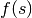 by any continuous and strictly positive probability density function (pdf) on .
. Define 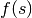 by any continuous and strictly positive probability density function (pdf) on .
- Start at a given point
 in the given set . Let
in the given set . Let
 .
. - Propose a new location 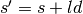 by stepping away from
according to a random direction-stepsize pair, 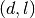, where the
direction
 is uniformly distributed on the unit hypersphere
is uniformly distributed on the unit hypersphere
 embedded in
; and the stepsize is drawn
from a proposal density
embedded in
; and the stepsize is drawn
from a proposal density  .
. - Accept proposal move to
 with acceptance probability
with acceptance probability
 , or, reject and stay at (i.e. set
, or, reject and stay at (i.e. set  ) with probability
) with probability
 .
. - Then set 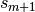 as , and, repeat the procedure again from
the first step, and let 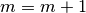.
To implement this simple algorithm, we need to define the functions 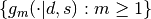, and  (which implies
(which implies  ) to ensure the necessary and sufficient (Kolmogorov) detailed balance condition holds (for the chain to be a reversible Markov chain):
) to ensure the necessary and sufficient (Kolmogorov) detailed balance condition holds (for the chain to be a reversible Markov chain):

This demands that the products of probabilities around every closed loop are the same in both directions around the loop.
We can define by any continuous and strictly positive probability density function (pdf) on
.Let 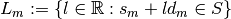. Define a conditional proposal density for each step
 by
by  .
.Proposal densities that satisfy the detailed balance condition include the class of symmetric proposal density—i.e.
 for all , in which case
for all , in which case
Since we have also
bounded, we can define a valid proposal
density as
Example
In our application, we will define a 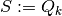 for every  .
.
See Section 6.3.1 of [KTB2011] for a generalized version of this simple algorithm.
Looking ahead
Here we give a preview of the usage of uniform sampling from the convex partition elements. In Equilibrium Payoff Correspondence later, we show that in our class of dynamic games, the description of the symmetric sequential equilibrium operator (which is correspondence valued) involves solving many non-separable bilinear programs (BLP) of the form:

where 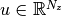 is a vector of constants; 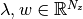 are the variables of interest;  is some 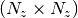 real matrix; and the constraint sets
is some 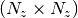 real matrix; and the constraint sets  and
and  are convex polytopes which, respectively, depend on the choices of
are convex polytopes which, respectively, depend on the choices of  and
and  . [2] [3]
. [2] [3]
We propose a Monte Carlo or stochastic approach to obtain  -global (i.e. approximately global) optimization solutions to these non-separable bilinear programs. For now, notice that for each given realization of the random vector , the nonseparable BLP above can be reduced to standard linear programs (LP) in the variable . [4]
-global (i.e. approximately global) optimization solutions to these non-separable bilinear programs. For now, notice that for each given realization of the random vector , the nonseparable BLP above can be reduced to standard linear programs (LP) in the variable . [4]
Footnotes
| [1] | [Lov1999] proves that the upper bound on the convergence rate is in
polynomial time of  . . |
| [2] | A special (and textbook case) is where  and 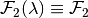—i.e. each constraint set and 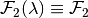—i.e. each constraint set  and 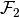 do not vary, respectively, with the choice variables and . This special case is known as a separable bilinear program, and, it nests quadratic programming as another special case. These problems are known to have a global solution–see [BM1993]. Furthermore, successive approximation using branching-and-bounding methods–i.e. branching into subsets of the optimizer domain, then bounding the value function below by the solutions of linear programs on each subset of the function domain, and, above by the value from a local nonlinear optimizer–can be used to find the -global optimum: [McC1976] , [BM1993] and [HT1996] and 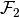 do not vary, respectively, with the choice variables and . This special case is known as a separable bilinear program, and, it nests quadratic programming as another special case. These problems are known to have a global solution–see [BM1993]. Furthermore, successive approximation using branching-and-bounding methods–i.e. branching into subsets of the optimizer domain, then bounding the value function below by the solutions of linear programs on each subset of the function domain, and, above by the value from a local nonlinear optimizer–can be used to find the -global optimum: [McC1976] , [BM1993] and [HT1996] |
| [3] | In the paper, we noted that in this class of games, the source of
bilinear nonseparability in the constraint sets of and is
the utilitarian government’s set of incentive or promise-keeping constraints. |
| [4] | Note that by fixing each , the constraint set will be redundant in the LP formulation within the stochastic global optimization scheme. Additionally, we will also require each realization to be feasible according to some feasibility (e.g. a budget-balance) requirement(s):  , where , where  is some finite set of action profiles of the large (government) player. is some finite set of action profiles of the large (government) player. |
Example (Sampling from  and 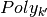)
and 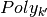)
The following figure (Uniform samples and various polytope intersections ) shows an example of our usage of the Hit-and-Run algorithm in conjunction with our polytope intersection problems described earlier. For example, consider the (4,1)-panel in this figure. It shows the realizations of the random vectors  , where denotes the fourth action profile in
, where denotes the fourth action profile in  , that would end up in the various partition elements of
, that would end up in the various partition elements of  , and given that each vector is randomly drawn from the set .
, and given that each vector is randomly drawn from the set .

Uniform samples and various polytope intersections 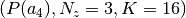
| [BM1993] | (1, 2) Bennett, Kristin and Olvi L. Mangasarian (1993): “Bilinear Separation of Two Sets in n-Space”. Computational Optimization and Applications, 2. |
| [HT1996] | Horst, Reiner and Hoang Tuy (1996): “Global Optimization: Deterministic Approaches”. Springer Verlag. |
| [KTB2011] | Kroese, Dirk P., Thomas Taimre and Zdravko I. Botev (2011): Handbook of Monte Carlo Methods. Wiley Series in Probability and Statistics. Wiley. |
| [Lov1999] | (1, 2) Lovasz, Laszlo (1999): “Hit-and-run Mixes Fast”. Mathematical Programming, Ser. A 86, 443-461. |
| [LV2003] | Lovasz, Laszlo and Santosh Vempala (2003): “Hit-and-Run is Fast and Fun”, Technical Report, Microsoft Research, MSR-TR-2003-05. |
| [McC1976] | McCormick, Garth P. (1976): “Computability of Global Solutions to Factorable Nonconvex Programs: Part I. Convex underestimating problems”. Mathematical Programming, 10, 147–175. |
| [Smi1984] | Smith, Robert L. (1986): “Efficient Monte-Carlo Procedures for Generating Points Uniformly Distributed over Bounded Regions”. Operations Research, 32, 1296-1308. |